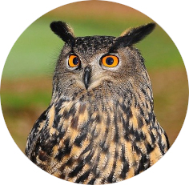

Ta stran prikazuje običajne oblike zapisa slik. Morda pa iščeš povezave.
Oblika zapisa JPG/JPEG je primerna predvsem za prelivajoče se barve (gradiente) in za fotografije.

Oblika zapisa GIF je primerna predvsem za preproste animacije.
Oblika zapisa PNG je primerna predvsem za diagrame, grafikone, preproste grafike in ikone.
Oblika zapisa SVG je neverjetna. Uporabi jo, če je le mogoče, saj jo lahko poljubno povečuješ brez izgube kakovosti.